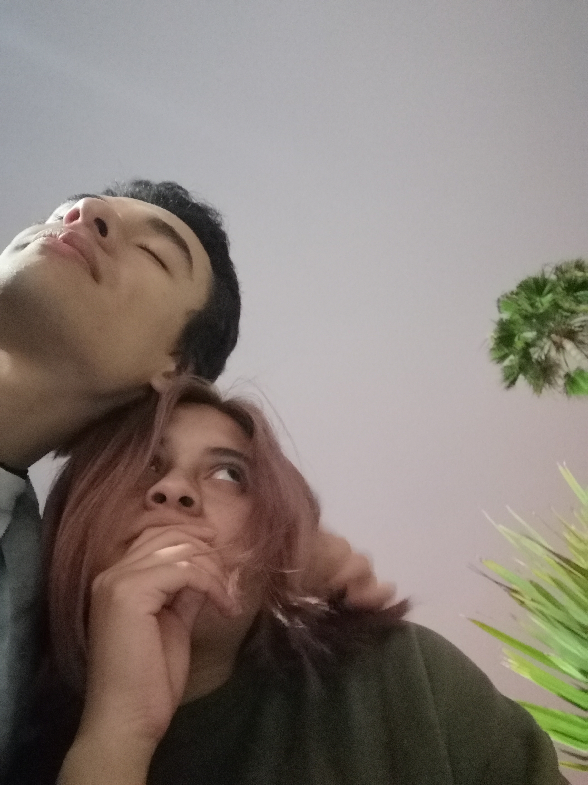
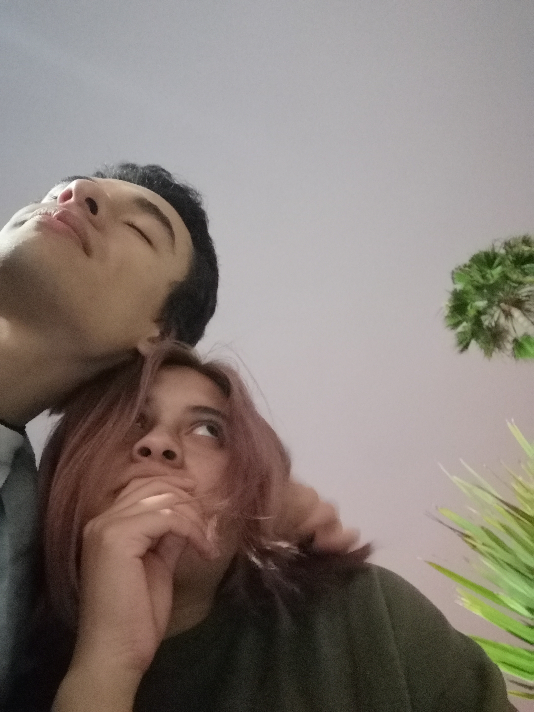
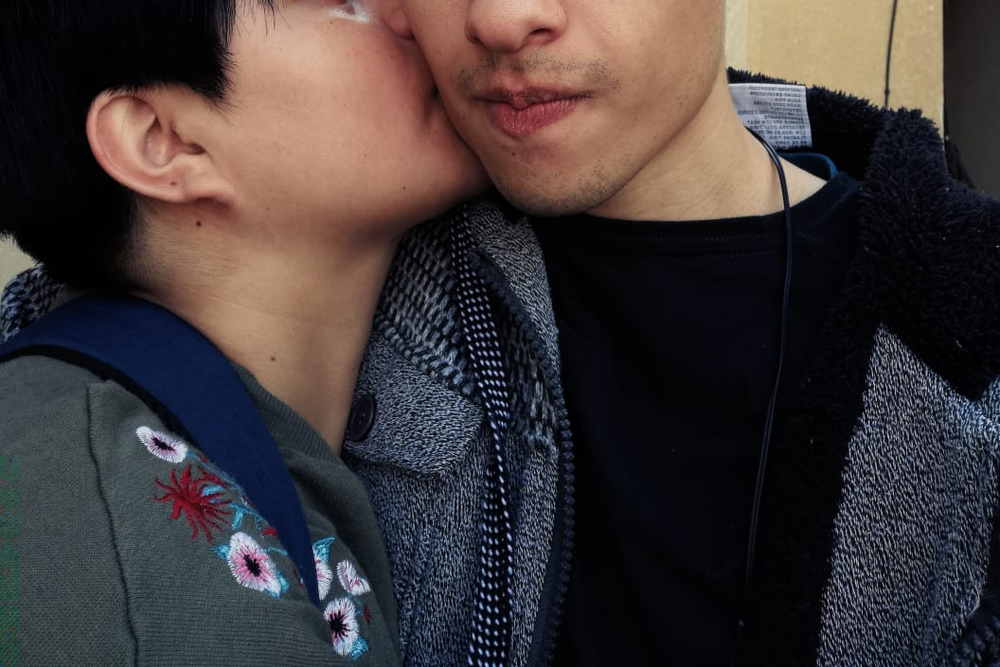
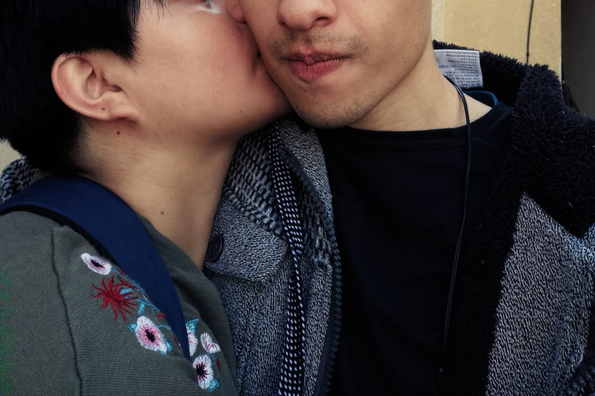

I totally wouldn't have thought that I'd fell in love with you, and for sure, it's been a year since, but I think all this love I have felt for you is turning into more respect, admiration and thankfulness. Maybe things aren't the way I'd like them to be, but I am glad I get to spend some time with you. And your time, love, support and dedication are a precious gift I cherish with all the purest parts of my own soul.
 

 
